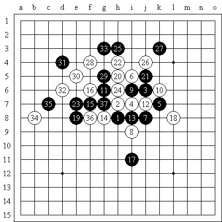
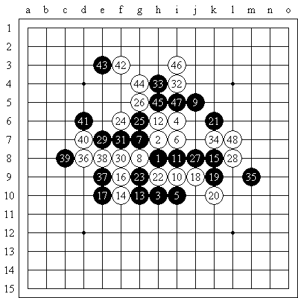
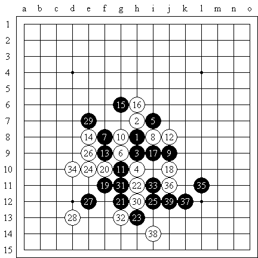

“以久之名”炫飞大擂台活动实战邀请赛自战棋评
#1 “以久之名”炫飞大擂台活动实战邀请赛自战棋评 作者：雨一直下 发表时间：2010-9-14 21:48:47

12手稍微考虑了一下直接塞在了里面，13以下变化自然，形状我也能接受。17并非无理之手，目前局面纠缠难以出棋，若再行几回合黑棋必落于后手，此着结合19、21将局面激烈化方能寻得胜机。22是局面的分水岭！23强硬的应对，但白棋继续保有连攻，但27定形后我惊讶地发现白棋竟然难以取胜，28、30亦不强，但由于对手在考虑17时花掉了太多时间，因此31送出了简单的漏着。

20-22，22-j10似乎也可？实战21太过激进，32不知有没有更好的招法，如此演变，33后局面暂时平衡。34制造线路，35控制空间。可惜左边交换时41草率，没有注意到42的强硬连接！以下白必胜。

9最近流行手段，但我暂时很少接触。12-15常见，但个人不喜欢。17冷静地占优，21好形状！我一度以为无法防守了，但最终还是走了最老实的22。25做棋！其实这里有一套十多步的VCF，但双方都没有看到，我则看到了另一套有反四的线路，于是考虑先手进行破坏，但还是给黑棋留下了29的子力，其实这里由于纵i线上黑棋形状有缺陷，白棋防守并不难。33定形后简单看了看感觉右边没杀，于是欢快地走了34，但35选点好，黑简明必胜。33后白棋再补一手才是好的选择，但由于有了29做辅助，如果能够避开白棋在左边的反击，黑棋在上方将有相当不错的机会。
［ 炫飞冰弦 于 2010-9-15 7:19:23 时花20金币送鲜花一朵］
#2 Re:“以久之名”炫飞大擂台活动实战邀请赛自战棋评 作者：炫飞冰弦 发表时间：2010-9-15 7:21:36
支持 刚才去屏蔽博客转了圈，发现有不少好东西。。。